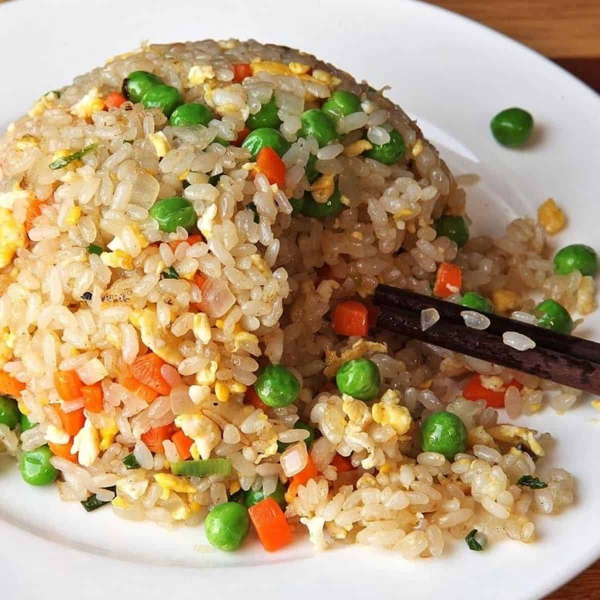

Fried Recipe Recipe

Description:
This is a fried rice recipe from the famous comedian Nigel Ng using his persona of the food critic Uncle Roger!
Hopefully by recreating this recipe (make sure your remember the MSG!) you'll make Uncle Roger proud.
Ingredients:
- 2 tablespoons peanut oil
- 5 garlic cloves, smashed
- 1 shallot, sliced from the middle
- 1 egg + 1 egg yolk
- 1 spring onion, sliced
- 1 red chilli, sliced or chopped
- 4 cups chicken flavoured rice (day old works best according to Roger)
- 2 tablespoons soy sauce
- 2 tablespoon sesame oil
- 1/2 teablespoon MSG
Steps:
- Cook the chicken flavored rice according to the package.
- Whisk the egg and egg yolk in a bowl and set aside.
- Coat a wok pan with peanut oil and heat over medium. Once it starts smoking, throw the excess off.
- Add garlic and shallot. Fry it for 3 minutes.
- Add eggs and stir until it's almost solid.
- Add the cooked rice and mix it with everything.
- Add the soy sauce and sesame oil. Flatten it into the rice with the back of the spoon.
- Add the MSG, spring onion, and chili and mix everything in the wok to combine.